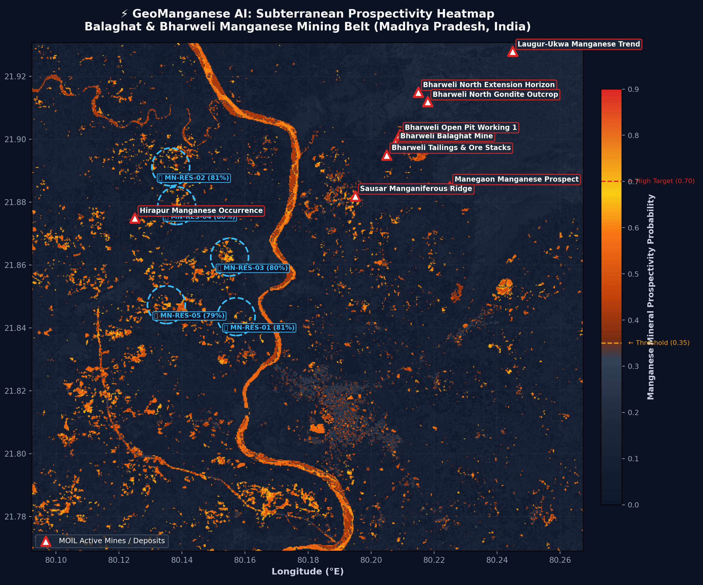

⏳ Fetching Real-Time Weather & Climatic Safety Data...
Open-Meteo API
Evaluating precipitation rates, convective storm activity, and DGMS mining limitation thresholds.
Exploration Grid
324 km²
600 × 600 px @ 30m
Tree Canopy Filtered
91.4%
NDVI > 0.40 Masked
AI Confidence Peak
85.1%
Balanced Random Forest
Manganese Reservoirs
43
Delineated Subterranean Targets
MOIL Ground Truth
100%
Bharweli Mine Spatial Match
📐 Selected Exploration Area & Mine Coordinates Inspector
Click the Rectangle or Polygon icon on the map toolbar above to draw a box over any exploration target.
The exact GPS coordinates, enclosed MOIL mines, and real-time pre-mining rain limitations will update immediately.
Centroid Coordinate
21.84989° N, 80.17987° E
North-West Corner
21.93076° N, 80.09232° E
South-East Corner
21.76901° N, 80.26743° E
Enclosed Footprint
324.00 km² (32,400 Ha)
⛏️ Enclosed MOIL Mines (12)
💎 Enclosed Manganese Reservoirs (43)
🔥 AI Subterranean Manganese Prospectivity Heatmap (Publication-Grade Model)
Supervised Random Forest probability matrix across Band 4 (Red), Band 5 (NIR), Band 6 (SWIR1), and Band 7 (SWIR2) with hydrothermal alteration spectroscopy.
